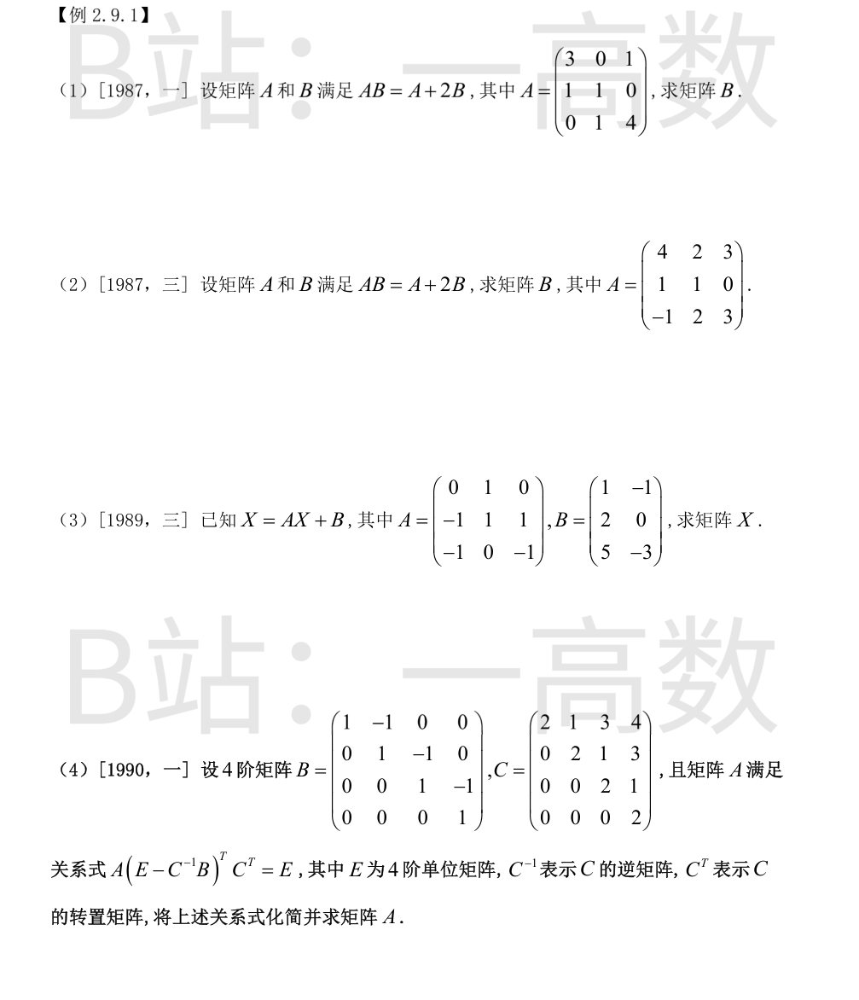
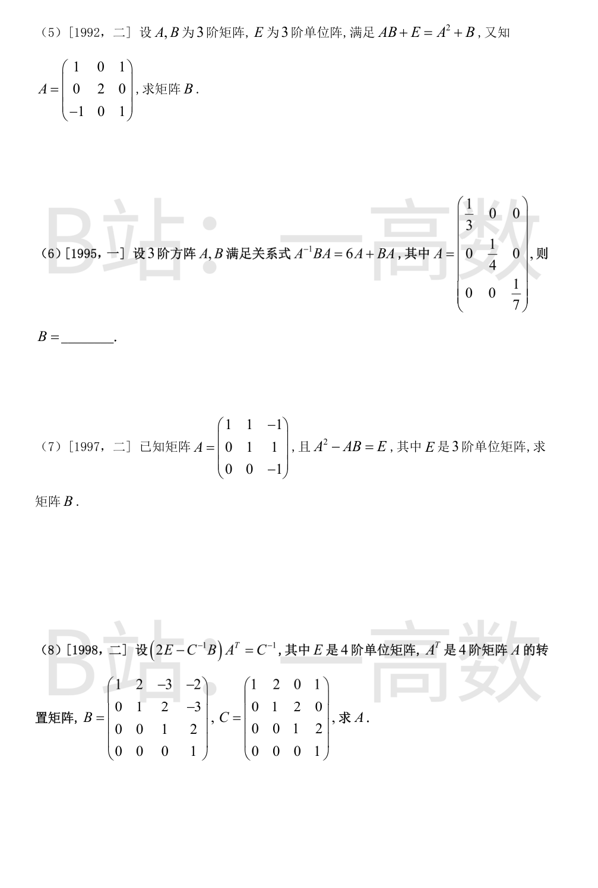
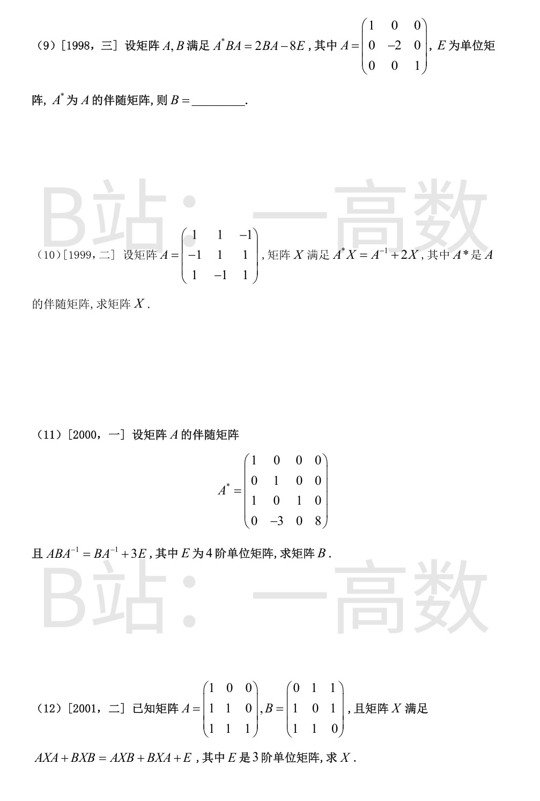
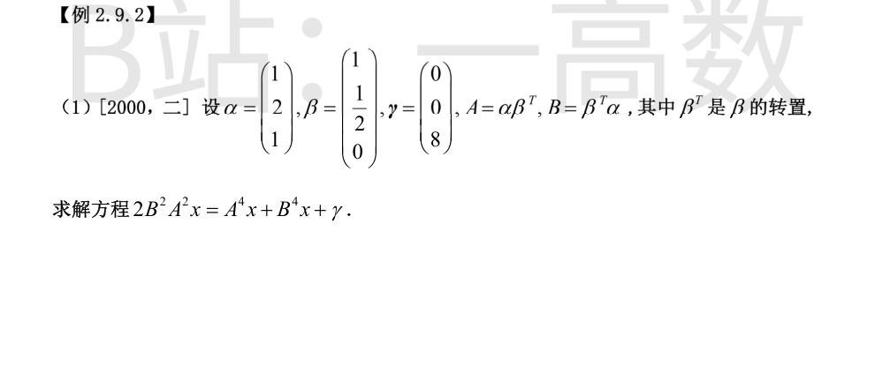
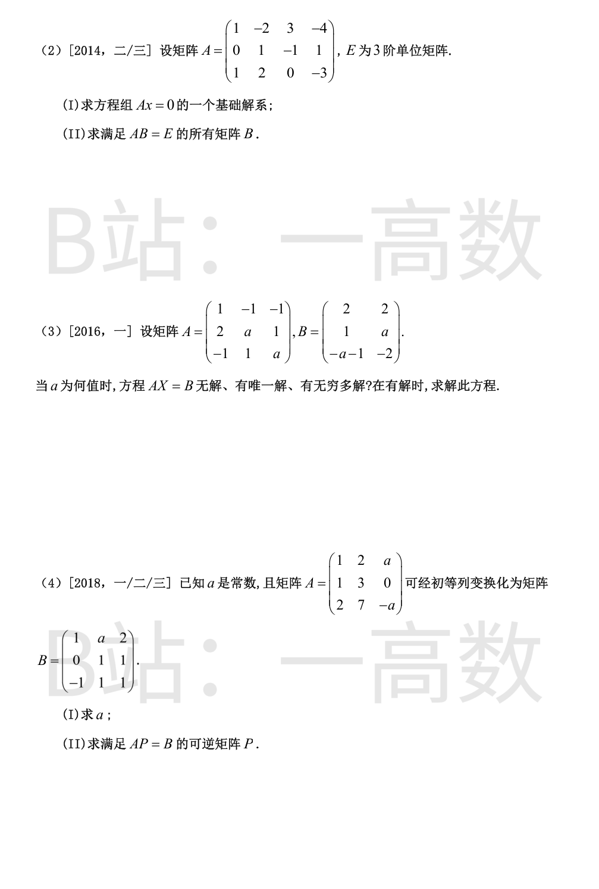
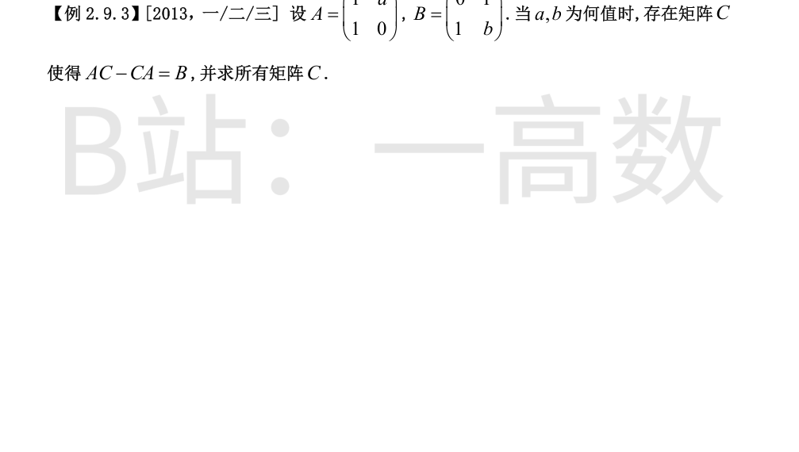

由 $AB=A+2B$ 得 $(A-2E)B=A$，故 $B=(A-2E)^{-1}A$。
$$A-2E=\begin{pmatrix}1&0&1\\1&-1&0\\0&1&2\end{pmatrix},\quad |A-2E|=-2+1=-1\neq0$$
初行变换求逆：$(A-2E)^{-1}=\begin{pmatrix}2&-1&-1\\2&-2&-1\\-1&1&1\end{pmatrix}$。
$$B=(A-2E)^{-1}A=\begin{pmatrix}2&-1&-1\\2&-2&-1\\-1&1&1\end{pmatrix}\begin{pmatrix}3&0&1\\1&1&0\\0&1&4\end{pmatrix}=\begin{pmatrix}5&-2&-2\\4&-3&-2\\-2&2&3\end{pmatrix}$$
验证：AB 各元素与 A+2B 逐一相等，成立。
同上，$(A-2E)B=A$，$B=(A-2E)^{-1}A$。
$$A-2E=\begin{pmatrix}2&2&3\\1&-1&0\\-1&2&1\end{pmatrix},\quad |A-2E|=-2-2+3=-1\neq0$$
伴随矩阵法求逆：$(A-2E)^{-1}=\begin{pmatrix}1&-4&-3\\1&-5&-3\\-1&6&4\end{pmatrix}$（验证 $(A-2E)(A-2E)^{-1}=E$ 成立）。
$$B=(A-2E)^{-1}A=\begin{pmatrix}1&-4&-3\\1&-5&-3\\-1&6&4\end{pmatrix}\begin{pmatrix}4&2&3\\1&1&0\\-1&2&3\end{pmatrix}=\begin{pmatrix}3&-8&-6\\2&-9&-6\\-2&12&9\end{pmatrix}$$
验证 AB=A+2B 成立。
$(E-A)X=B$，$X=(E-A)^{-1}B$。
$$E-A=\begin{pmatrix}1&-1&0\\1&0&-1\\1&0&2\end{pmatrix},\quad |E-A|=0+3+0=3\neq0$$
$(E-A)^{-1}=\frac13\begin{pmatrix}0&2&1\\-3&2&1\\0&-1&1\end{pmatrix}$。
$$X=\frac13\begin{pmatrix}0&2&1\\-3&2&1\\0&-1&1\end{pmatrix}\begin{pmatrix}1&-1\\2&0\\5&-3\end{pmatrix}=\frac13\begin{pmatrix}9&-3\\6&0\\3&-3\end{pmatrix}=\begin{pmatrix}3&-1\\2&0\\1&-1\end{pmatrix}$$
验证 $(E-A)X=B$：各行分别为 $(3-2,-1-0)=(1,-1)$、$(3-1,-1+1)=(2,0)$、$(3+2,-1-2)=(5,-3)$，成立。
化简：$(E-C^{-1}B)^{T}C^{T}=[C(E-C^{-1}B)]^{T}=(C-B)^{T}$，故 $A(C-B)^{T}=E$，
$$A=[(C-B)^{T}]^{-1}=\big[(C-B)^{-1}\big]^{T}$$
$$C-B=\begin{pmatrix}1&2&3&4\\0&1&2&3\\0&0&1&2\\0&0&0&1\end{pmatrix}:=D$$
$D=E+N$（$N$ 为上三角幂零阵），$D^{-1}=E-N+N^{2}-N^{3}=\begin{pmatrix}1&-2&1&0\\0&1&-2&1\\0&0&1&-2\\0&0&0&1\end{pmatrix}$。
$$A=(D^{-1})^{T}=\begin{pmatrix}1&0&0&0\\-2&1&0&0\\1&-2&1&0\\0&1&-2&1\end{pmatrix}$$
$AB+E=A^{2}+B \Rightarrow AB-B=A^{2}-E \Rightarrow (A-E)B=(A-E)(A+E)$。
$$A-E=\begin{pmatrix}0&0&1\\0&1&0\\-1&0&0\end{pmatrix},\quad |A-E|=1\neq0$$
$A-E$ 可逆，两边左乘 $(A-E)^{-1}$ 得 $B=A+E$。
$$B=\begin{pmatrix}2&0&1\\0&3&0\\-1&0&2\end{pmatrix}$$
两边左乘 $A$、右乘 $A^{-1}$：$B=6A^{2}+ABA$ 的左边……即 $BA=6A^{2}+ABA$，右乘 $A^{-1}$ 得 $B=6A+AB$，于是 $(E-A)B=6A$，$B=6(E-A)^{-1}A$。
$E-A=\operatorname{diag}(\tfrac23,\tfrac34,\tfrac67)$，$(E-A)^{-1}=\operatorname{diag}(\tfrac32,\tfrac43,\tfrac76)$，
$$(E-A)^{-1}A=\operatorname{diag}(\tfrac12,\tfrac13,\tfrac16),\quad B=6\begin{pmatrix}\tfrac12&0&0\\0&\tfrac13&0\\0&0&\tfrac16\end{pmatrix}=\begin{pmatrix}3&0&0\\0&2&0\\0&0&1\end{pmatrix}$$
$A(A-B)=E$，$|A|=-1\neq0$，故 $A-B=A^{-1}$，$B=A-A^{-1}$。
$$A^{-1}=\begin{pmatrix}1&-1&-2\\0&1&1\\0&0&-1\end{pmatrix}$$
$$B=\begin{pmatrix}1&1&-1\\0&1&1\\0&0&-1\end{pmatrix}-\begin{pmatrix}1&-1&-2\\0&1&1\\0&0&-1\end{pmatrix}=\begin{pmatrix}0&2&1\\0&0&0\\0&0&0\end{pmatrix}$$
两边左乘 $C$：$(2C-B)A^{T}=E$，故 $A^{T}=(2C-B)^{-1}$，$A=\big[(2C-B)^{-1}\big]^{T}$。
$$2C-B=\begin{pmatrix}1&2&3&4\\0&1&2&3\\0&0&1&2\\0&0&0&1\end{pmatrix},\quad (2C-B)^{-1}=\begin{pmatrix}1&-2&1&0\\0&1&-2&1\\0&0&1&-2\\0&0&0&1\end{pmatrix}$$
$$A=\big[(2C-B)^{-1}\big]^{T}=\begin{pmatrix}1&0&0&0\\-2&1&0&0\\1&-2&1&0\\0&1&-2&1\end{pmatrix}$$
$|A|=-2$。原式右乘 $A^{-1}$：$A^{*}B=2B-8A^{-1}$；再左乘 $A$：$AA^{*}B=|A|B=-2B=2AB-8E$。
整理：$-2B-2AB=-8E\Rightarrow (E+A)B=4E$，$B=4(E+A)^{-1}$。
$E+A=\operatorname{diag}(2,-1,2)$，$(E+A)^{-1}=\operatorname{diag}(\tfrac12,-1,\tfrac12)$，
$$B=\begin{pmatrix}2&0&0\\0&-4&0\\0&0&2\end{pmatrix}$$
$|A|=2+2+0=4$，$A^{*}=|A|A^{-1}=4A^{-1}$。
$4A^{-1}X=A^{-1}+2X \Rightarrow (A^{*}-2E)X=A^{-1}$，
$$X=(A^{*}-2E)^{-1}A^{-1}=\big[(A^{*}-2E)A\big]^{-1}=\big(|A|E-2A\big)^{-1}=\tfrac12(2E-A)^{-1}$$
$$2E-A=\begin{pmatrix}1&-1&1\\1&1&-1\\-1&1&1\end{pmatrix},\quad|2E-A|=4$$
$(2E-A)^{-1}=\frac14\begin{pmatrix}2&2&0\\0&2&2\\2&0&2\end{pmatrix}$（伴随矩阵已用 $(2E-A)\cdot\text{adj}=4E$ 验证），故
$$X=\frac14\begin{pmatrix}1&1&0\\0&1&1\\1&0&1\end{pmatrix}$$
验证：$4X=E+2AX$ 成立。
$ABA^{-1}=BA^{-1}+3E$ 右乘 $A$：$AB=B+3A$，即 $(A-E)B=3A$，$B=3(A-E)^{-1}A=3\big[E+(A-E)^{-1}\big]$。
先由 $A^{*}$ 求 $A$：$A^{*}$ 为下三角，$|A^{*}|=8=|A|^{3}\Rightarrow|A|=2$，$A=|A|(A^{*})^{-1}=2(A^{*})^{-1}$。
$$(A^{*})^{-1}=\begin{pmatrix}1&0&0&0\\0&1&0&0\\-1&0&1&0\\0&\tfrac38&0&\tfrac18\end{pmatrix},\quad A=\begin{pmatrix}2&0&0&0\\0&2&0&0\\-2&0&2&0\\0&\tfrac34&0&\tfrac14\end{pmatrix}$$
$$A-E=\begin{pmatrix}1&0&0&0\\0&1&0&0\\-2&0&1&0\\0&\tfrac34&0&-\tfrac34\end{pmatrix},\quad (A-E)^{-1}=\begin{pmatrix}1&0&0&0\\0&1&0&0\\2&0&1&0\\0&1&0&-\tfrac43\end{pmatrix}$$
（已验证 $(A-E)(A-E)^{-1}=E$。）于是
$$B=3\begin{pmatrix}2&0&0&0\\0&2&0&0\\2&0&2&0\\0&1&0&-\tfrac13\end{pmatrix}=\begin{pmatrix}6&0&0&0\\0&6&0&0\\6&0&6&0\\0&3&0&-1\end{pmatrix}$$
移项组因子：$AXA-AXB-BXA+BXB=E\Rightarrow (A-B)X(A-B)=E$，故 $X=\big[(A-B)^{-1}\big]^{2}$。
$$A-B=\begin{pmatrix}1&-1&-1\\0&1&-1\\0&0&1\end{pmatrix},\quad (A-B)^{-1}=\begin{pmatrix}1&1&2\\0&1&1\\0&0&1\end{pmatrix}$$
$$X=\begin{pmatrix}1&1&2\\0&1&1\\0&0&1\end{pmatrix}^{2}=\begin{pmatrix}1&2&5\\0&1&2\\0&0&1\end{pmatrix}$$


$\beta^{T}\alpha=\alpha^{T}\beta=1+1+0=2$，$\alpha^{T}\alpha=6$。
$$A^{2}=\alpha\beta^{T}\alpha\beta^{T}=2A,\quad B^{2}=2B,\quad A^{4}=8A,\quad B^{4}=8B$$
$$B^{2}A^{2}=(2B)(2A)=4BA=4\,\beta(\alpha^{T}\alpha)\beta^{T}=24\beta\beta^{T}$$
原方程化为 $48\beta(\beta^{T}x)-8\alpha(\beta^{T}x)-8\beta(\alpha^{T}x)=\gamma$。记 $u=\beta^{T}x$，$v=\alpha^{T}x$：
$$8\big[(6u-v)\beta-u\alpha\big]=\gamma$$
按三个分量：第3分量 $-8u=8\Rightarrow u=-1$；第1分量 $40u-8v=0\Rightarrow v=5u=-5$；代回第2分量应为 $8u-4v=0$，但 $8(-1)-4(-5)=12\neq0$，矛盾。
结构性原因：方程左端恒属于 $\operatorname{span}\{\alpha,\beta\}=\{z:\ z_1-2z_2+3z_3=0\}$，而 $\gamma=(0,0,8)^{T}$ 使 $0-0+24=24\neq0$，故 $\gamma\notin\operatorname{span}\{\alpha,\beta\}$，方程无解。
卡点：按图中印刷数据（α=(1,2,1)ᵀ、β=(1,1/2,0)ᵀ、γ=(0,0,8)ᵀ、2B²A²x=A⁴x+B⁴x+γ）方程必无解，与「求解方程」的题意不符，疑原题某数据（最可能为 γ）在扫描/排版中有误；结论按所印数据给出。
对 $\begin{pmatrix}A&E\end{pmatrix}$ 作初行变换：
$$\begin{pmatrix}1&-2&3&-4&1&0&0\\0&1&-1&1&0&1&0\\1&2&0&-3&0&0&1\end{pmatrix}\to\begin{pmatrix}1&0&0&1&2&6&-1\\0&1&0&-2&-1&-3&1\\0&0&1&-3&-1&-4&1\end{pmatrix}$$
(I) $Ax=0$ 同解于 $x_1+x_4=0,\ x_2-2x_4=0,\ x_3-3x_4=0$，取 $x_4=1$：
$$\xi=(-1,\ 2,\ 3,\ 1)^{T}$$
(II) $AB=E$ 按列即解 $Ax=e_j\ (j=1,2,3)$，通解 = 特解 $+k_j\xi$：
$$B=\begin{pmatrix}2&6&-1\\-1&-3&1\\-1&-4&1\\0&0&0\end{pmatrix}+\begin{pmatrix}-1\\2\\3\\1\end{pmatrix}(k_1,\ k_2,\ k_3),\quad k_1,k_2,k_3\in R$$
验证 $k_j=0$ 时 $AB_0=E$ 逐元素成立。
对增广矩阵 $\begin{pmatrix}A&B\end{pmatrix}$ 作行变换：
$$\begin{pmatrix}1&-1&-1&2&2\\2&a&1&1&a\\-1&1&a&-a-1&-2\end{pmatrix}\to\begin{pmatrix}1&-1&-1&2&2\\0&a+2&3&-3&a-4\\0&0&a-1&1-a&0\end{pmatrix}$$
$|A|=(a+2)(a-1)$。
① $a\neq1$ 且 $a\neq-2$：唯一解。第一列：$(a-1)x_3=1-a\Rightarrow x_3=-1$，$(a+2)x_2=0\Rightarrow x_2=0$，$x_1=2+x_2+x_3=1$；第二列：$x_3=0$，$x_2=\frac{a-4}{a+2}$，$x_1=2+x_2=\frac{3a}{a+2}$。
$$X=\begin{pmatrix}1&\tfrac{3a}{a+2}\\0&\tfrac{a-4}{a+2}\\-1&0\end{pmatrix}$$
② $a=1$：第三行为零行，前两行给出 $x_2+x_3=-1$（两列同），$x_1=2+(x_2+x_3)=1$，$x_2,x_3$ 各自任取：
$$X=\begin{pmatrix}1&1\\s&t\\-1-s&-1-t\end{pmatrix},\quad s,t\in R$$
③ $a=-2$：第二列出现 $0=-6$ 型矛盾行（$3x_3=-6$ 与 $-3x_3=0$），无解。
(I) 初等列变换即右乘可逆阵，故 $r(A)=r(B)$。$\det A=0$（对任意 $a$：$-3a+2a+a=0$，$r(A)=2$），而 $\det B=2-a$，故 $a=2$。
(II) $a=2$ 时解 $AP=B$，对 $\begin{pmatrix}A&B\end{pmatrix}$ 行变换：
$$\begin{pmatrix}1&2&2&1&2&2\\1&3&0&0&1&1\\2&7&-2&-1&1&1\end{pmatrix}\to\begin{pmatrix}1&0&6&3&4&4\\0&1&-2&-1&-1&-1\\0&0&0&0&0&0\end{pmatrix}$$
通解 $p_j=(3,4,4)^{T},(-1,-1,-1)^{T}$ 对应列 $+\ t_j(-6,2,1)^{T}$：
$$P=\begin{pmatrix}3-6t_1&4-6t_2&4-6t_3\\-1+2t_1&-1+2t_2&-1+2t_3\\t_1&t_2&t_3\end{pmatrix}$$
$\det P=t_3-t_2$，取 $t_2\neq t_3$（如 $t_1=t_2=0,t_3=1$）得可逆 $P=\begin{pmatrix}3&4&-2\\-1&-1&1\\0&0&1\end{pmatrix}$。

设 $C=\begin{pmatrix}x_1&x_2\\x_3&x_4\end{pmatrix}$，则
$$AC=\begin{pmatrix}x_1+ax_3&x_2+ax_4\\x_1&x_2\end{pmatrix},\quad CA=\begin{pmatrix}x_1+x_2&ax_1\\x_3+x_4&ax_3\end{pmatrix}$$
$$AC-CA=\begin{pmatrix}ax_3-x_2&x_2+a x_4-a x_1\\x_1-x_3-x_4&x_2-ax_3\end{pmatrix}=\begin{pmatrix}0&1\\1&b\end{pmatrix}$$
四个方程：① $ax_3-x_2=0$；② $x_2+a(x_4-x_1)=1$；③ $x_1-x_3-x_4=1$；④ $x_2-ax_3=b$。
①-④ 得 $b=0$（任意 $x_2,ax_3$ 都满足 $x_2-ax_3=ax_3-x_2$ 的相反？精确地：①给出 $x_2=ax_3$，代入④左边 $=0$，故 $b=0$）。③给出 $x_3+x_4-x_1=-1$，代入②：$x_2+a(x_4-x_1)=ax_3-a(x_3+x_4-1)=a(1-x_4)\cdot$……直接用③：$x_4-x_1=-1+x_3-x_3$……由③ $x_1=1+x_3+x_4$，则②左边 $=x_2+a(x_4-1-x_3-x_4)=ax_3-a(1+x_3)= -a$，故 $-a=1\Rightarrow a=-1$。
所以 $a=-1,\ b=0$，此时 $x_2=-x_3$，$x_1=1+x_3+x_4$，$x_3,x_4$ 任意。记 $x_3=s,\ x_4=t$：
$$C=\begin{pmatrix}1+s+t&-s\\s&t\end{pmatrix},\quad s,t\in R$$
验证：$AC-CA=\begin{pmatrix}0&1\\1&0\end{pmatrix}$ 成立。